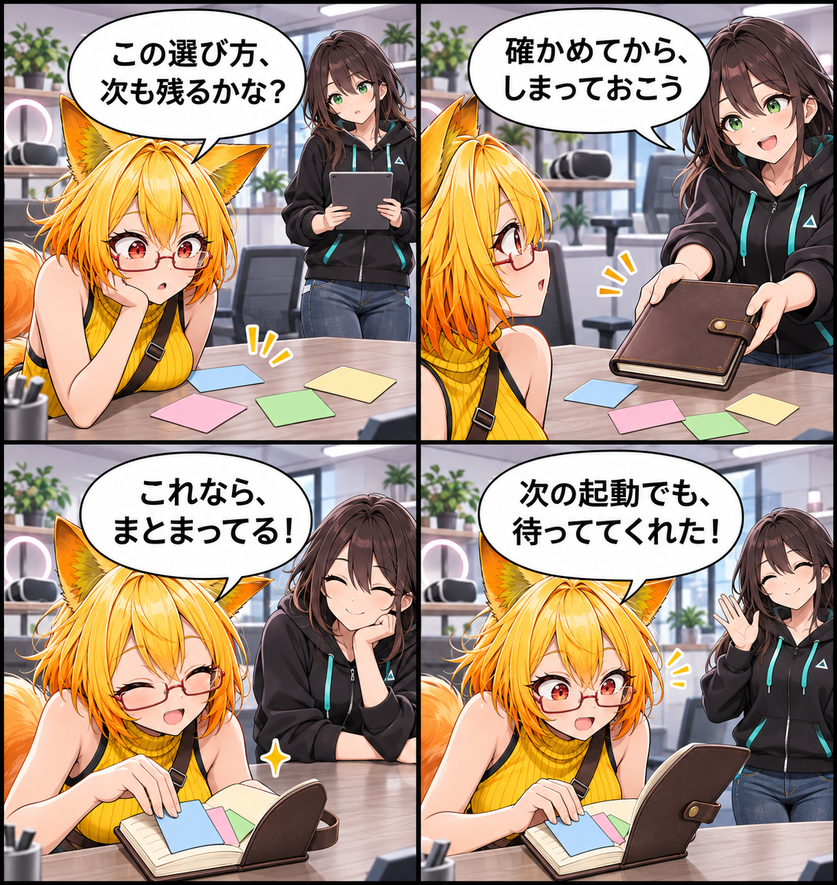

2026.11.10 / Development Log / Feature Spotlight
閑話休題：設定を、次の起動へ持ち越す
新規実装の報告ではなく、VRASに既にある共通設定の保存を紹介します。音量や表示、撮影、VR入力などの選択を、次に開いたときへ引き継ぐための仕組みです。
今回は feature-spotlight（機能紹介） です。集計期間は2026-11-09 03:00:00 JSTから2026-11-10 02:59:59 JSTまで、対象はViewerの
main です。集計終了時点のHEADは c33733a41be121b814a1732df8c9eae089ace2ea、期間内コミットは3件でした。整理・保守が中心で読者向けの新しい到達を確認できなかったため、現行実装で確認できた設定保存の仕組みを紹介します。MainScene.unity の未コミット差分は、期間内に実装された事実を確定できないため実績には含めていません。
選んだことを、次へ渡す
VRASの共通設定は、音量、表示、撮影、VR入力など、使いながら選んだ内容を扱います。設定は一つの操作だけで閉じず、次の起動でも同じ作業を続けやすくするための土台です。
保存前に確認し、まとめて書く
保存の共通経路では、設定を検証してから原子的に書き込み、保存後に設定を再読み込みします。途中の状態をそのまま残さないための仕組みで、音量など個別の設定も同じ流れへそろえています。
今回の紹介範囲
設定例ファイルは初期値の一部を示す例であり、ユーザーの設定を丸ごと写したものではありません。クラウド同期、自動復旧、実機での長時間検証などは、この紹介の対象外です。今回は「選んだ内容を次回へ渡す」既存の保存経路に絞ります。
4コマの話
机の上へ散らばった小さなカードを、ろひが留め具つきのノートへしまいます。次の朝に開くと、同じカードがきちんと待っている――設定を次の起動へ渡す感覚を、小さな日常の場面にしました。
まとめ
VRASの設定保存は、選んだ作業環境を次回へ引き継ぐ既存の仕組みです。設定を検証し、まとめて保存して読み直すことで、続きを始める場所を整えます。